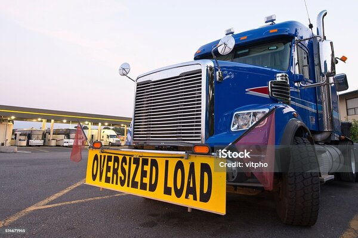

Mission
Help clients coordinate abnormal load movements safely, efficiently and responsibly.
Samukele Trading and Projects (Pty) Ltd is presented in the original student proposal as a South African transport and logistics business focused on abnormal load escort services.

We aim to support clients moving large loads with considered route planning, clear communication and careful on-road coordination.
This project site is a student demonstration. Company history, staff names and operational credentials must be confirmed by the organisation before public release.
Help clients coordinate abnormal load movements safely, efficiently and responsibly.
Be a trusted point of contact for planning and escort support across South Africa.
A coordinated team model connects the client, route planner and escort personnel. Individual profiles will be added after approval.